Chapter 12 Answers to practical exercises
Below are all the questions and answers to the practical exercises at the end of each exercise.
12.1 Need to know R
No exercises
12.2 Data wrangling
Using the frog-eyes-raw-data.csv data and R, create a new dataframe that contains only the columns genus_species, Family, and two new columns containing the species mean values for rootmass and eyemean. Note that we will talk more about this dataset in later exercises, but it comes from Thomas et al. (2020).
There are multiple ways of doing this, but the easiest is as follows:
# Load packages
library(tidyverse)
# Read in the data
frog <- read_csv("data/frog-eyes-raw-data.csv")
# Take a look at it
glimpse(frog)
# Create a new dataframe called frog2
frog2 <-
# Start with the frog dataframe
frog %>%
# Select only the columns of interest
select(genus_species, Family, rootmass, eyemean) %>%
# Group by species name, and Family (or summarise will try and average this too!)
group_by(genus_species, Family) %>%
# Summarise to get the mean values
summarise(mean_rootmass = mean(rootmass),
mean_eyemean = mean(eyemean))
# Look at frog2
glimpse(frog2)
# Write to file
# This is commented out as I don't want to save this
# write_csv(frog2, path = "data/clean-frog-data.csv")12.3 Phylogenies
Read in the frog-tree.nex phylogeny from the folder. This comes from Feng et al. (2017). Then do the following:
Read the tree into R.
# Load packages
library(ape)
library(ggtree)
library(tidyverse)
# Read in the tree
tree <- read.nexus("data/frog-tree.nex")
# Look at it
tree##
## Phylogenetic tree with 214 tips and 213 internal nodes.
##
## Tip labels:
## Ascaphus_truei_Ascaphidae, Leiopelma_hochstetteri_Leiopelmatidae, Alytes_obstetricans_Alytidae, Discoglossus_pictus_Alytidae, Barbourula_busuangensis_Bombinatoridae, Bombina_orientalis_Bombinatoridae, ...
##
## Rooted; includes branch lengths.- Use R functions to determine:
- how many species are in the tree?
## List of 4
## $ edge : int [1:426, 1:2] 215 216 217 218 219 220 221 222 223 224 ...
## $ edge.length: num [1:426] 0.166 0.114 0.102 0.4 0.133 ...
## $ Nnode : int 213
## $ tip.label : chr [1:214] "Ascaphus_truei_Ascaphidae" "Leiopelma_hochstetteri_Leiopelmatidae" "Alytes_obstetricans_Alytidae" "Discoglossus_pictus_Alytidae" ...
## - attr(*, "class")= chr "phylo"
## - attr(*, "order")= chr "cladewise"##
## Phylogenetic tree with 214 tips and 213 internal nodes.
##
## Tip labels:
## Ascaphus_truei_Ascaphidae, Leiopelma_hochstetteri_Leiopelmatidae, Alytes_obstetricans_Alytidae, Discoglossus_pictus_Alytidae, Barbourula_busuangensis_Bombinatoridae, Bombina_orientalis_Bombinatoridae, ...
##
## Rooted; includes branch lengths.There are 214 tips
- is the tree fully resolved?
## [1] TRUEYes
- is the tree rooted?
## [1] TRUEYes
- Use
plot.phyloto plot the tree.- Can you change the size of the tip labels?
- Can you make a fan-shaped plot?
- Can you change the colour of the tips and branches?
# Plot the tree
plot(tree,
no.margin = TRUE, # to make sure it fills the whole space
type = "fan", # to make a fan tree
cex = 0.6, # to reduce the tip label size (default = 1)
tip.color = "deeppink", # to change the tip colour
edge.color = "springgreen") # to change the branch colour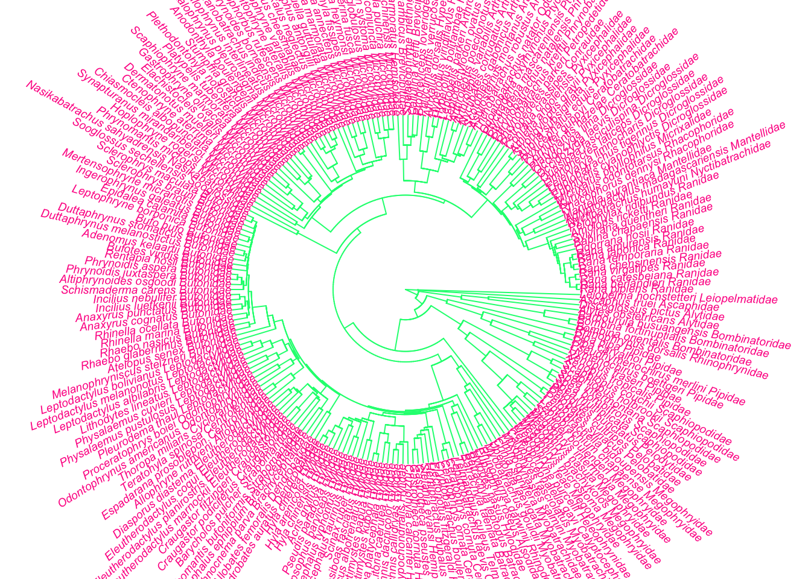
- Save the tree to file as “mysuperdoopertree.nex”
12.4 Preparation
In the data folder there is another tree (primate-tree.nex) and dataset (primate-data.csv) for investigating the evolution of primate life-history variables. These data come from the PanTHERIA database (Jones et al. 2009) and 10kTrees (Arnold, Matthews, and Nunn 2010).
Read in the tree and data then prepare them for a PCM analysis.
# Load packages
library(ape)
library(geiger)
library(tidyverse)
library(treeplyr)
# Read in the tree
primatetree <- read.nexus("data/primate-tree.nex")
# Look at the tree summary
str(primatetree)## List of 4
## $ edge : int [1:446, 1:2] 227 228 229 230 231 232 233 234 234 235 ...
## $ edge.length: num [1:446] 4.95 17.69 19.65 8.12 4.82 ...
## $ Nnode : int 221
## $ tip.label : chr [1:226] "Allenopithecus_nigroviridis" "Cercopithecus_ascanius" "Cercopithecus_cephus" "Cercopithecus_cephus_cephus" ...
## - attr(*, "class")= chr "phylo"
## - attr(*, "order")= chr "cladewise"# Plot the tree as a circular/fan phylogeny with small labels
plot(primatetree, cex = 0.2, typ = "fan", no.margin = TRUE)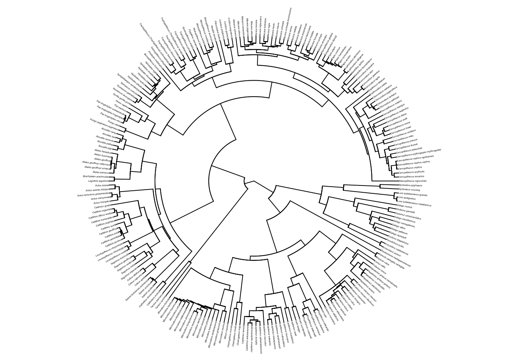
## [1] FALSE# It is FALSE so make the tree binary:
primatetree <- multi2di(primatetree)
# Check whether the tree is binary now...
is.binary.tree(primatetree) ## [1] TRUE## [1] TRUE# Check whether the tree is ultrametric
# We want this to be TRUE, but it is FALSE
is.ultrametric(primatetree)## [1] FALSE# Force ultrametric
primatetree <- force.ultrametric(primatetree)
# Read in the data
primatedata <- read_csv("data/primate-data.csv")##
## ── Column specification ───────────────────────────────────────────────────────
## cols(
## Order = col_character(),
## Family = col_character(),
## Binomial = col_character(),
## AdultBodyMass_g = col_double(),
## GestationLen_d = col_double(),
## HomeRange_km2 = col_double(),
## MaxLongevity_m = col_double(),
## SocialGroupSize = col_double(),
## SocialStatus = col_double()
## )## Rows: 77
## Columns: 9
## $ Order <chr> "Primates", "Primates", "Primates", "Primates", "Pri…
## $ Family <chr> "Atelidae", "Atelidae", "Atelidae", "Pitheciidae", "…
## $ Binomial <chr> "Ateles belzebuth", "Ateles geoffroyi", "Ateles pani…
## $ AdultBodyMass_g <dbl> 6692.42, 7582.40, 8697.25, 958.13, 558.00, 290.21, 1…
## $ GestationLen_d <dbl> 138.20, 226.37, 228.18, 164.00, 153.99, 144.00, 134.…
## $ HomeRange_km2 <dbl> 2.28000, 0.73000, 1.36000, 0.02000, 0.32000, 0.02000…
## $ MaxLongevity_m <dbl> 336.0, 327.6, 453.6, 303.6, 214.8, 201.6, 181.2, 252…
## $ SocialGroupSize <dbl> 14.50, 42.00, 20.00, 2.95, 6.85, 8.55, 6.00, 20.35, …
## $ SocialStatus <dbl> 2, 2, 2, 2, 2, 2, 2, 2, 2, 2, 2, 2, 2, 2, 2, 2, 2, 2…# Replace spaces with underscores in species names
primatedata <-
primatedata %>%
mutate(Binomial = str_replace(string = Binomial, pattern = " ", replacement = "_"))
# Check it worked
glimpse(primatedata)## Rows: 77
## Columns: 9
## $ Order <chr> "Primates", "Primates", "Primates", "Primates", "Pri…
## $ Family <chr> "Atelidae", "Atelidae", "Atelidae", "Pitheciidae", "…
## $ Binomial <chr> "Ateles_belzebuth", "Ateles_geoffroyi", "Ateles_pani…
## $ AdultBodyMass_g <dbl> 6692.42, 7582.40, 8697.25, 958.13, 558.00, 290.21, 1…
## $ GestationLen_d <dbl> 138.20, 226.37, 228.18, 164.00, 153.99, 144.00, 134.…
## $ HomeRange_km2 <dbl> 2.28000, 0.73000, 1.36000, 0.02000, 0.32000, 0.02000…
## $ MaxLongevity_m <dbl> 336.0, 327.6, 453.6, 303.6, 214.8, 201.6, 181.2, 252…
## $ SocialGroupSize <dbl> 14.50, 42.00, 20.00, 2.95, 6.85, 8.55, 6.00, 20.35, …
## $ SocialStatus <dbl> 2, 2, 2, 2, 2, 2, 2, 2, 2, 2, 2, 2, 2, 2, 2, 2, 2, 2…# Check whether the names match in the data and the tree
check <- name.check(phy = primatetree, data = primatedata,
data.names = primatedata$Binomial)
# Look at check
check## $tree_not_data
## [1] "Allenopithecus_nigroviridis"
## [2] "Allocebus_trichotis"
## [3] "Alouatta_caraya"
## [4] "Alouatta_sara"
## [5] "Aotus_azarae"
## [6] "Aotus_azarae_infulatus"
## [7] "Aotus_lemurinus_griseimembra"
## [8] "Aotus_nancymaae"
## [9] "Arctocebus_aureus"
## [10] "Arctocebus_calabarensis"
## [11] "Ateles_fusciceps"
## [12] "Ateles_geoffroyi_ornatus"
## [13] "Ateles_geoffroyi_vellerosus"
## [14] "Avahi_laniger"
## [15] "Avahi_occidentalis"
## [16] "Brachyteles_arachnoides"
## [17] "Bunopithecus_hoolock"
## [18] "Callicebus_donacophilus"
## [19] "Callithrix_(Mico)_emiliae"
## [20] "Callithrix_argentata"
## [21] "Callithrix_aurita"
## [22] "Callithrix_geoffroyi"
## [23] "Callithrix_humeralifera"
## [24] "Callithrix_kuhli"
## [25] "Callithrix_penicillata"
## [26] "Cercocebus_agilis"
## [27] "Cercocebus_atys"
## [28] "Cercocebus_torquatus"
## [29] "Cercopithecus_cephus_cephus"
## [30] "Cercopithecus_cephus_ngottoensis"
## [31] "Cercopithecus_diana"
## [32] "Cercopithecus_erythrogaster_erythrogaster"
## [33] "Cercopithecus_erythrotis"
## [34] "Cercopithecus_hamlyni"
## [35] "Cercopithecus_lhoesti"
## [36] "Cercopithecus_lowei"
## [37] "Cercopithecus_mona"
## [38] "Cercopithecus_petaurista"
## [39] "Cercopithecus_preussi"
## [40] "Cercopithecus_solatus"
## [41] "Cercopithecus_wolfi"
## [42] "Cheirogaleus_crossleyi"
## [43] "Chlorocebus_aethiops"
## [44] "Chlorocebus_pygerythrus"
## [45] "Chlorocebus_sabaeus"
## [46] "Chlorocebus_tantalus"
## [47] "Colobus_angolensis"
## [48] "Eulemur_albifrons"
## [49] "Eulemur_albocollaris"
## [50] "Eulemur_collaris"
## [51] "Eulemur_macaco_flavifrons"
## [52] "Eulemur_macaco_macaco"
## [53] "Eulemur_rubriventer"
## [54] "Eulemur_rufus"
## [55] "Eulemur_sanfordi"
## [56] "Euoticus_elegantulus"
## [57] "Galago_gallarum"
## [58] "Galago_zanzibaricus"
## [59] "Gorilla_gorilla_gorilla"
## [60] "Hapalemur_alaotrensis"
## [61] "Hapalemur_aureus"
## [62] "Hapalemur_griseus_griseus"
## [63] "Hapalemur_griseus_meridionalis"
## [64] "Hapalemur_occidentalis"
## [65] "Homo_sapiens"
## [66] "Hylobates_agilis"
## [67] "Hylobates_klossii"
## [68] "Hylobates_moloch"
## [69] "Hylobates_muelleri"
## [70] "Indri_indri"
## [71] "Leontopithecus_chrysomelas"
## [72] "Leontopithecus_chrysopygus"
## [73] "Lepilemur_aeeclis"
## [74] "Lepilemur_ankaranensis"
## [75] "Lepilemur_dorsalis"
## [76] "Lepilemur_edwardsi"
## [77] "Lepilemur_microdon"
## [78] "Lepilemur_mitsinjoensis"
## [79] "Lepilemur_randrianasoli"
## [80] "Lepilemur_ruficaudatus"
## [81] "Lepilemur_sahamalazensis"
## [82] "Lepilemur_seali"
## [83] "Lepilemur_septentrionalis"
## [84] "Lophocebus_aterrimus"
## [85] "Loris_lydekkerianus_grandis"
## [86] "Loris_lydekkerianus_malabaricus"
## [87] "Macaca_arctoides"
## [88] "Macaca_assamensis"
## [89] "Macaca_cyclopis"
## [90] "Macaca_hecki"
## [91] "Macaca_leonina"
## [92] "Macaca_maura"
## [93] "Macaca_nigra"
## [94] "Macaca_nigrescens"
## [95] "Macaca_ochreata"
## [96] "Macaca_ochreata_brunnescens"
## [97] "Macaca_pagensis"
## [98] "Macaca_siberu"
## [99] "Macaca_thibetana"
## [100] "Macaca_tonkeana"
## [101] "Mandrillus_leucophaeus"
## [102] "Microcebus_berthae"
## [103] "Microcebus_bongolavensis"
## [104] "Microcebus_danfossi"
## [105] "Microcebus_griseorufus"
## [106] "Microcebus_jollyae"
## [107] "Microcebus_lehilahytsara"
## [108] "Microcebus_lokobensis"
## [109] "Microcebus_mittermeieri"
## [110] "Microcebus_myoxinus"
## [111] "Microcebus_ravelobensis"
## [112] "Microcebus_sambiranensis"
## [113] "Microcebus_simmonsi"
## [114] "Microcebus_tavaratra"
## [115] "Nomascus_gabriellae"
## [116] "Nomascus_leucogenys"
## [117] "Nycticebus_coucang"
## [118] "Nycticebus_pygmaeus"
## [119] "Pan_troglodytes_schweinfurthii"
## [120] "Pan_troglodytes_troglodytes"
## [121] "Pan_troglodytes_verus"
## [122] "Papio_papio"
## [123] "Piliocolobus_badius"
## [124] "Pongo_abelii"
## [125] "Pongo_pygmaeus_pygmaeus"
## [126] "Presbytis_melalophos"
## [127] "Propithecus_coquereli"
## [128] "Propithecus_diadema"
## [129] "Propithecus_edwardsi"
## [130] "Propithecus_tattersalli"
## [131] "Pygathrix_nemaeus"
## [132] "Rhinopithecus_avunculus"
## [133] "Rhinopithecus_bieti"
## [134] "Rhinopithecus_brelichi"
## [135] "Rhinopithecus_roxellana"
## [136] "Rungwecebus_kipunji"
## [137] "Saguinus_geoffroyi"
## [138] "Saguinus_imperator"
## [139] "Saimiri_boliviensis_boliviensis"
## [140] "Saimiri_oerstedii"
## [141] "Trachypithecus_(Trachypithecus)_auratus"
## [142] "Trachypithecus_(Trachypithecus)_poliocephalus"
## [143] "Trachypithecus_cristatus"
## [144] "Trachypithecus_francoisi"
## [145] "Trachypithecus_johnii"
## [146] "Trachypithecus_phayrei"
## [147] "Trachypithecus_pileatus"
## [148] "Varecia_rubra"
## [149] "Varecia_variegata_variegata"
##
## $data_not_tree
## character(0)# 149 species are in the tree but not the data
# 0 species are in the data but not the tree
# Combine and match the tree and data
primatestuff <- make.treedata(tree = primatetree, data = primatedata,
name_column = "Binomial")
# Look at the tree summary
primatestuff$phy##
## Phylogenetic tree with 77 tips and 76 internal nodes.
##
## Tip labels:
## Cercopithecus_ascanius, Cercopithecus_cephus, Cercopithecus_mitis, Cercopithecus_neglectus, Cercopithecus_nictitans, Erythrocebus_patas, ...
##
## Rooted; includes branch lengths.## Rows: 77
## Columns: 8
## $ Order <fct> Primates, Primates, Primates, Primates, Primates, Pr…
## $ Family <fct> Cercopithecidae, Cercopithecidae, Cercopithecidae, C…
## $ AdultBodyMass_g <dbl> 3540.24, 3444.88, 5041.29, 5324.52, 5256.91, 7966.30…
## $ GestationLen_d <dbl> 148.50, 169.51, 138.39, 172.07, 169.51, 167.20, 164.…
## $ HomeRange_km2 <dbl> 0.16000, 0.24000, 0.10000, 0.06000, 1.15000, 28.2400…
## $ MaxLongevity_m <dbl> 339.6, 276.0, 325.2, 315.6, 276.0, 286.8, 370.8, 180…
## $ SocialGroupSize <dbl> 26.30, 11.00, 16.00, 4.50, 16.00, 28.00, 91.20, 1.00…
## $ SocialStatus <int> 2, 2, 2, 2, 2, 2, 2, 1, 1, 1, 2, 2, 2, 2, 1, 1, 1, 1…## There are 77 species in the tree and the data
# Make a new column called tiplabel with the tip labels in it
primatestuff$dat$tiplabel <- primatestuff$phy$tip.label
# Save tree as mytree
mytree <- primatestuff$phy
# Save data as mydata
mydata <- primatestuff$dat
# Force mydata to be a data frame
mydata <- as.data.frame(mydata)
# Check mydata is now a dataframe
str(mydata)## 'data.frame': 77 obs. of 9 variables:
## $ Order : Factor w/ 1 level "Primates": 1 1 1 1 1 1 1 1 1 1 ...
## $ Family : Factor w/ 15 levels "Aotidae","Atelidae",..: 4 4 4 4 4 4 4 5 5 6 ...
## $ AdultBodyMass_g: num 3540 3445 5041 5325 5257 ...
## $ GestationLen_d : num 148 170 138 172 170 ...
## $ HomeRange_km2 : num 0.16 0.24 0.1 0.06 1.15 ...
## $ MaxLongevity_m : num 340 276 325 316 276 ...
## $ SocialGroupSize: num 26.3 11 16 4.5 16 28 91.2 1 1 1 ...
## $ SocialStatus : int 2 2 2 2 2 2 2 1 1 1 ...
## $ tiplabel : chr "Cercopithecus_ascanius" "Cercopithecus_cephus" "Cercopithecus_mitis" "Cercopithecus_neglectus" ...12.5 Phylogenetic signal
In the data folder there is another tree (primate-tree.nex) and dataset (primate-data.csv) for investigating the evolution of primate life-history variables. These data come from the PanTHERIA database (Jones et al. 2009) and 10kTrees (Arnold, Matthews, and Nunn 2010).
Read in the tree and data, then prepare them for a PCM analysis (you may have already done this in the previous exercise which should save you some time). Then answer the following questions:
# Load the packages
library(ape)
library(geiger)
library(treeplyr)
library(caper)
library(tidyverse)
library(phytools)
### Prepare the tree and the data as shown in the Preparation answer above ###
### This should mean you now have mydata and mytree ready to work with ###- What is \(\lambda\) for log gestation length?
# First create logGestation containing just log gestation length values
logGestation <- log(pull(mydata, GestationLen_d))
# Give log Eye names = species names at the tips of the phylogeny
names(logGestation) <- mydata$tiplabel
# Look at the first few rows
head(logGestation)## Cercopithecus_ascanius Cercopithecus_cephus Cercopithecus_mitis
## 5.000585 5.132912 4.930076
## Cercopithecus_neglectus Cercopithecus_nictitans Erythrocebus_patas
## 5.147901 5.132912 5.119191# Estimate lambda
lambdaGestation <- phylosig(mytree, logGestation, method = "lambda", test = TRUE)
# Look at the results
lambdaGestation##
## Phylogenetic signal lambda : 0.948326
## logL(lambda) : 34.9204
## LR(lambda=0) : 89.026
## P-value (based on LR test) : 3.89649e-210.948
- What is K for log gestation length?
# Estimate Blomberg’s *K*
KGestation <- phylosig(mytree, logGestation, method = "K", test = TRUE, nsim = 1000)
# Look at the results
KGestation##
## Phylogenetic signal K : 0.775777
## P-value (based on 1000 randomizations) : 0.0010.776
- What is D for social status?
# Prepare the data for use in caper
primate <- comparative.data(phy = mytree, data = mydata,
names.col = tiplabel, vcv = TRUE,
na.omit = FALSE, warn.dropped = TRUE)
# Force the phylogeny to have polytomies again nrather than zero length branches
primate$phy <- di2multi(primate$phy)
# Estimate D
Dsocial <- phylo.d(data = primate, names.col = tiplabel, binvar = SocialStatus,
permut = 1000)
# Look at the output
Dsocial##
## Calculation of D statistic for the phylogenetic structure of a binary variable
##
## Data : mydata
## Binary variable : SocialStatus
## Counts of states: 1 = 14
## 2 = 63
## Phylogeny : mytree
## Number of permutations : 1000
##
## Estimated D : -0.6804117
## Probability of E(D) resulting from no (random) phylogenetic structure : 0
## Probability of E(D) resulting from Brownian phylogenetic structure : 0.97~ -0.72, this is a randomisation test so may vary
12.6 PGLS
In the data folder there is another tree (primate-tree.nex) and dataset (primate-data.csv) for investigating the evolution of primate life-history variables. These data come from the PanTHERIA database (Jones et al. 2009) and 10kTrees (Arnold, Matthews, and Nunn 2010).
Let’s investigate the relationship between gestation length in Primates and their body size. Theory leads us to believe that bigger mammals have longer gestation lengths (compare mice to elephants), but is this true in Primates?
Read in the tree and data, then prepare them for a PCM analysis (you may have already done this in a previous exercise which should save you some time). Fit a PGLS model to investigate the relationship between log gestation length (y = log(GestationLen_d)) and log body size (x = log(AdultBodyMass_g)) in Primates. Don’t forget to look at the model diagnostics!
# Load the packages
library(ape)
library(geiger)
library(treeplyr)
library(caper)
library(tidyverse)
### Prepare the tree and the data as shown in the Preparation answer above ###
### This should mean you now have mydata and mytree ready to work with ###
# Prepare the data for use in caper
primate <- comparative.data(phy = mytree, data = mydata,
names.col = tiplabel, vcv = TRUE,
na.omit = FALSE, warn.dropped = TRUE)
# Check the list of dropped species is what you expected
primate$dropped$tips## character(0)## character(0)# Fit a PGLS model
model.pgls <- pgls(log(GestationLen_d) ~ log(AdultBodyMass_g),
data = primate, lambda = "ML", bounds = list(lambda = c(0.01, 1)))
### Model diagnostics
# Make a plotting window with 4 panes as there are four plots
par(mfrow = c(2, 2))
# Now plot the model diagnostics
plot(model.pgls)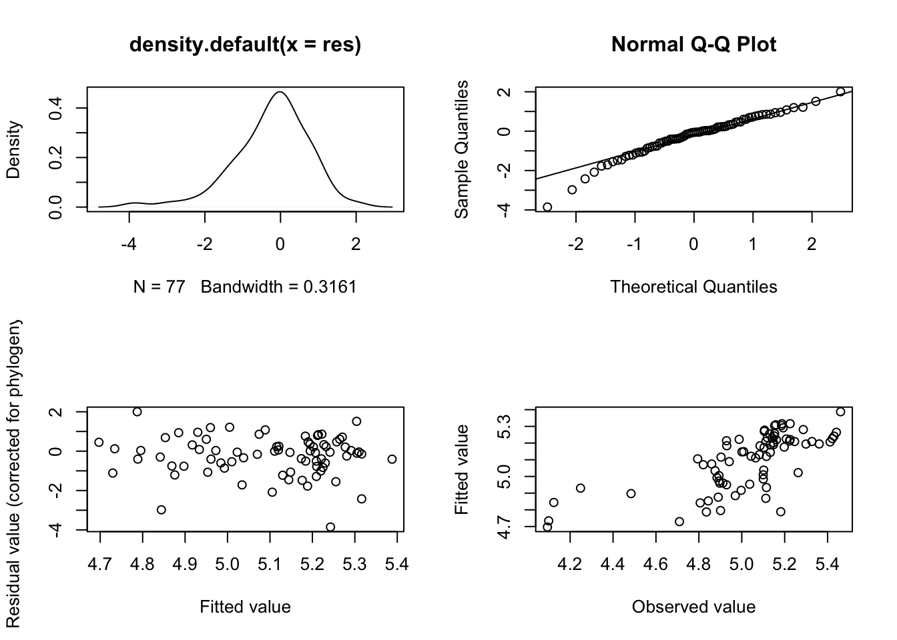
# Return the plot window to one pane for later plotting
par(mfrow = c(1, 1))
# Look at the model outputs
summary(model.pgls)##
## Call:
## pgls(formula = log(GestationLen_d) ~ log(AdultBodyMass_g), data = primate,
## lambda = "ML", bounds = list(lambda = c(0.01, 1)))
##
## Residuals:
## Min 1Q Median 3Q Max
## -0.097244 -0.019277 -0.001562 0.009037 0.050542
##
## Branch length transformations:
##
## kappa [Fix] : 1.000
## lambda [ ML] : 0.892
## lower bound : 0.010, p = 3.3196e-14
## upper bound : 1.000, p = 0.00046393
## 95.0% CI : (0.753, 0.967)
## delta [Fix] : 1.000
##
## Coefficients:
## Estimate Std. Error t value Pr(>|t|)
## (Intercept) 4.290229 0.160355 26.7546 < 2.2e-16 ***
## log(AdultBodyMass_g) 0.104864 0.019628 5.3426 9.479e-07 ***
## ---
## Signif. codes: 0 '***' 0.001 '**' 0.01 '*' 0.05 '.' 0.1 ' ' 1
##
## Residual standard error: 0.0261 on 75 degrees of freedom
## Multiple R-squared: 0.2757, Adjusted R-squared: 0.266
## F-statistic: 28.54 on 1 and 75 DF, p-value: 9.479e-07# Plot the results
ggplot(mydata, aes(x = log(AdultBodyMass_g),
y = log(GestationLen_d))) +
geom_point() +
geom_abline(slope = coefficients(model.pgls)[2],
intercept = coefficients(model.pgls)[1]) +
theme_bw()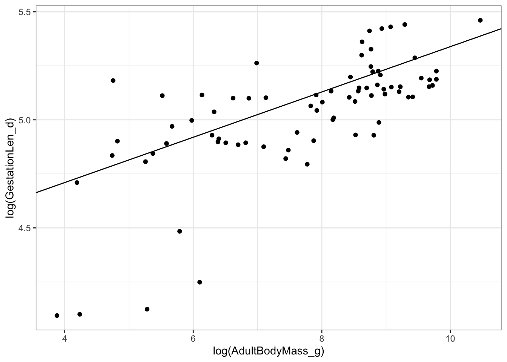
Then answer the following questions.
- What is the maximum likelihood estimate of \(\lambda\) in the model?
##
## Call:
## pgls(formula = log(GestationLen_d) ~ log(AdultBodyMass_g), data = primate,
## lambda = "ML", bounds = list(lambda = c(0.01, 1)))
##
## Residuals:
## Min 1Q Median 3Q Max
## -0.097244 -0.019277 -0.001562 0.009037 0.050542
##
## Branch length transformations:
##
## kappa [Fix] : 1.000
## lambda [ ML] : 0.892
## lower bound : 0.010, p = 3.3196e-14
## upper bound : 1.000, p = 0.00046393
## 95.0% CI : (0.753, 0.967)
## delta [Fix] : 1.000
##
## Coefficients:
## Estimate Std. Error t value Pr(>|t|)
## (Intercept) 4.290229 0.160355 26.7546 < 2.2e-16 ***
## log(AdultBodyMass_g) 0.104864 0.019628 5.3426 9.479e-07 ***
## ---
## Signif. codes: 0 '***' 0.001 '**' 0.01 '*' 0.05 '.' 0.1 ' ' 1
##
## Residual standard error: 0.0261 on 75 degrees of freedom
## Multiple R-squared: 0.2757, Adjusted R-squared: 0.266
## F-statistic: 28.54 on 1 and 75 DF, p-value: 9.479e-070.892
- What are the confidence intervals on the maximum likelihood estimate of \(\lambda\). How would you interpret these?
## [1] 0.753434 0.9665430.753434, 0.966543. We are 95% certain that lambda is between these two values.
- Plot the \(\lambda\) profile for the the maximum likelihood estimate of \(\lambda\). What does it look like?
# Create a likelihood profile of the lambda estimate
lambda.profile <- pgls.profile(model.pgls, "lambda")
# Plot the likelihood profile
plot(lambda.profile)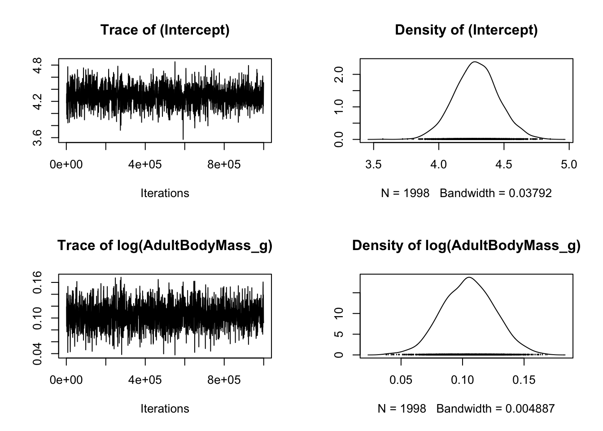
- Is there a significant relationship between log gestation length and log body size? What is the slope of this relationship?
##
## Call:
## pgls(formula = log(GestationLen_d) ~ log(AdultBodyMass_g), data = primate,
## lambda = "ML", bounds = list(lambda = c(0.01, 1)))
##
## Residuals:
## Min 1Q Median 3Q Max
## -0.097244 -0.019277 -0.001562 0.009037 0.050542
##
## Branch length transformations:
##
## kappa [Fix] : 1.000
## lambda [ ML] : 0.892
## lower bound : 0.010, p = 3.3196e-14
## upper bound : 1.000, p = 0.00046393
## 95.0% CI : (0.753, 0.967)
## delta [Fix] : 1.000
##
## Coefficients:
## Estimate Std. Error t value Pr(>|t|)
## (Intercept) 4.290229 0.160355 26.7546 < 2.2e-16 ***
## log(AdultBodyMass_g) 0.104864 0.019628 5.3426 9.479e-07 ***
## ---
## Signif. codes: 0 '***' 0.001 '**' 0.01 '*' 0.05 '.' 0.1 ' ' 1
##
## Residual standard error: 0.0261 on 75 degrees of freedom
## Multiple R-squared: 0.2757, Adjusted R-squared: 0.266
## F-statistic: 28.54 on 1 and 75 DF, p-value: 9.479e-07Yes. p < 0.001. Slope = 0.105 \(\pm\) 0.019
12.7 MCMCglmm
No exercises
12.8 Models of evolution with continuous traits
In the data folder there is another tree (primate-tree.nex) and dataset (primate-data.csv) for investigating the evolution of primate life-history variables. These data come from the PanTHERIA database (Jones et al. 2009) and 10kTrees (Arnold, Matthews, and Nunn 2010).
Read in the tree and data, then prepare them for a PCM analysis (you may have already done this in a previous exercise which should save you some time). Fit Brownian and OU models to log adult body mass for Primates (AdultBodyMass_g). Then answer the following questions.
# Load the packages
library(ape)
library(geiger)
library(treeplyr)
library(caper)
library(tidyverse)
### Prepare the tree and the data as shown in the Preparation answer above ###
### This should mean you now have mydata and mytree ready to work with ###
# Create logBodyMass containing just log body mass values
logBodyMass <- log(pull(mydata, AdultBodyMass_g))
# Give log body mass names = species names at the tips of the phylogeny
names(logBodyMass) <- mydata$tiplabel
# Look at the first few rows
head(logBodyMass)## Cercopithecus_ascanius Cercopithecus_cephus Cercopithecus_mitis
## 8.171950 8.144644 8.525417
## Cercopithecus_neglectus Cercopithecus_nictitans Erythrocebus_patas
## 8.580078 8.567299 8.982975# Fit the Brownian model
BM <- fitContinuous(mytree, logBodyMass, model = c("BM"))
# Fit the OU model
OU <- fitContinuous(mytree, logBodyMass, model = c("OU"))- Which model fits best?
# Could look at AIC weights...
aic.scores <- setNames(c(BM$opt$aic, OU$opt$aic), c("BM","OU"))
aicw(aic.scores)## fit delta w
## BM 160.1921 0 0.7310586
## OU 162.1921 2 0.2689414## [1] 160.1921## [1] 162.1921BM but only by a small amount
- What is the rate of evolution for the Brownian model?
## GEIGER-fitted comparative model of continuous data
## fitted 'BM' model parameters:
## sigsq = 0.028655
## z0 = 6.773956
##
## model summary:
## log-likelihood = -78.096042
## AIC = 160.192084
## AICc = 160.354246
## free parameters = 2
##
## Convergence diagnostics:
## optimization iterations = 100
## failed iterations = 0
## number of iterations with same best fit = 100
## frequency of best fit = 1.00
##
## object summary:
## 'lik' -- likelihood function
## 'bnd' -- bounds for likelihood search
## 'res' -- optimization iteration summary
## 'opt' -- maximum likelihood parameter estimates## [1] 0.02865480.028655
- What is the strength of pull towards the long-term mean in the OU model? What does this value suggest?
## GEIGER-fitted comparative model of continuous data
## fitted 'OU' model parameters:
## alpha = 0.000000
## sigsq = 0.028655
## z0 = 6.773956
##
## model summary:
## log-likelihood = -78.096042
## AIC = 162.192084
## AICc = 162.520851
## free parameters = 3
##
## Convergence diagnostics:
## optimization iterations = 100
## failed iterations = 0
## number of iterations with same best fit = 57
## frequency of best fit = 0.57
##
## object summary:
## 'lik' -- likelihood function
## 'bnd' -- bounds for likelihood search
## 'res' -- optimization iteration summary
## 'opt' -- maximum likelihood parameter estimates## [1] 4.487747e-2068.080092e-49, i.e. very close to zero which makes it very close to a Brownian model
12.9 Models of evolution with discrete traits
In the data folder there is another tree (primate-tree.nex) and dataset (primate-data.csv) for investigating the evolution of primate life-history variables. These data come from the PanTHERIA database (Jones et al. 2009) and 10kTrees (Arnold, Matthews, and Nunn 2010).
Read in the tree and data, then prepare them for a PCM analysis (you may have already done this in a previous exercise which should save you some time). Fit equal rates, symmetric rates and all rates different models to the social status variable for Primates (SocialStatus). Note that social status has two states: non-social (1) or social (2).
# Load the packages
library(ape)
library(geiger)
library(treeplyr)
library(caper)
library(tidyverse)
### Prepare the tree and the data as shown in the Preparation answer above ###
### This should mean you now have mydata and mytree ready to work with ###
# Create Social containing just social status values
Social <- pull(mydata, SocialStatus)
# Give social status names = species names at the tips of the phylogeny
names(Social) <- mydata$tiplabel
# Look at the first few rows
head(Social)## Cercopithecus_ascanius Cercopithecus_cephus Cercopithecus_mitis
## 2 2 2
## Cercopithecus_neglectus Cercopithecus_nictitans Erythrocebus_patas
## 2 2 2# Fit the ER model
equal <- fitDiscrete(mytree, Social, model = "ER")
# Fit the ARD model
ard <- fitDiscrete(mytree, Social, model = "ARD")Then answer the following questions.
- Which model fits best?
# Using AIC weights
aic.scores <- setNames(c(equal$opt$aic, ard$opt$aic),
c("equal", "different"))
aicw(aic.scores)## fit delta w
## equal 38.98307 5.313651 0.06556956
## different 33.66942 0.000000 0.93443044## [1] 38.98307## [1] 33.66942All rates different
- What is the transition rate from non-social (1) to social (2), and vice versa, in the all rates different model? What does this mean biologically?
## GEIGER-fitted comparative model of discrete data
## fitted Q matrix:
## 1 2
## 1 -9.264914e-03 9.264914e-03
## 2 1.476682e-17 -1.476682e-17
##
## model summary:
## log-likelihood = -14.834711
## AIC = 33.669423
## AICc = 33.831585
## free parameters = 2
##
## Convergence diagnostics:
## optimization iterations = 100
## failed iterations = 0
## number of iterations with same best fit = 51
## frequency of best fit = 0.51
##
## object summary:
## 'lik' -- likelihood function
## 'bnd' -- bounds for likelihood search
## 'res' -- optimization iteration summary
## 'opt' -- maximum likelihood parameter estimates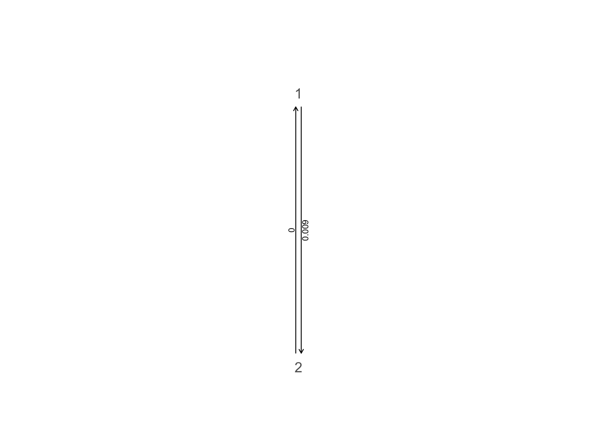
1 to 2 is ~0.009, 2 to 1 is very close to zero. Transitions from social (2) to non-social (1) behaviour are extremely rare.
- Plot ancestral state estimates of social status (from the ARD model) on the phylogeny. Is the root node estimated as being non-social or social?
# Ancestral state estimation (ignore the warnings)
ancestral_social <- ace(Social, mytree, type = "discrete", model = "ARD")## Warning in sqrt(diag(solve(h))): NaNs produced# Choose colours
social_colours <- c("deeppink", "goldenrod")
# Plot the tree with colours at the tips and nodes to represent socail status
plot(mytree, cex = 0.5, adj = c(0.2), type = "fan",
no.margin = TRUE, show.tip.label = TRUE)
tiplabels(pch = 16, col = social_colours[mydata$SocialStatus])
nodelabels(pie = ancestral_social$lik.anc, piecol = social_colours, cex = 0.5)
legend("bottomleft", pch = 15, bty = "n",
legend = c("Non Social", "Social"),
col = social_colours)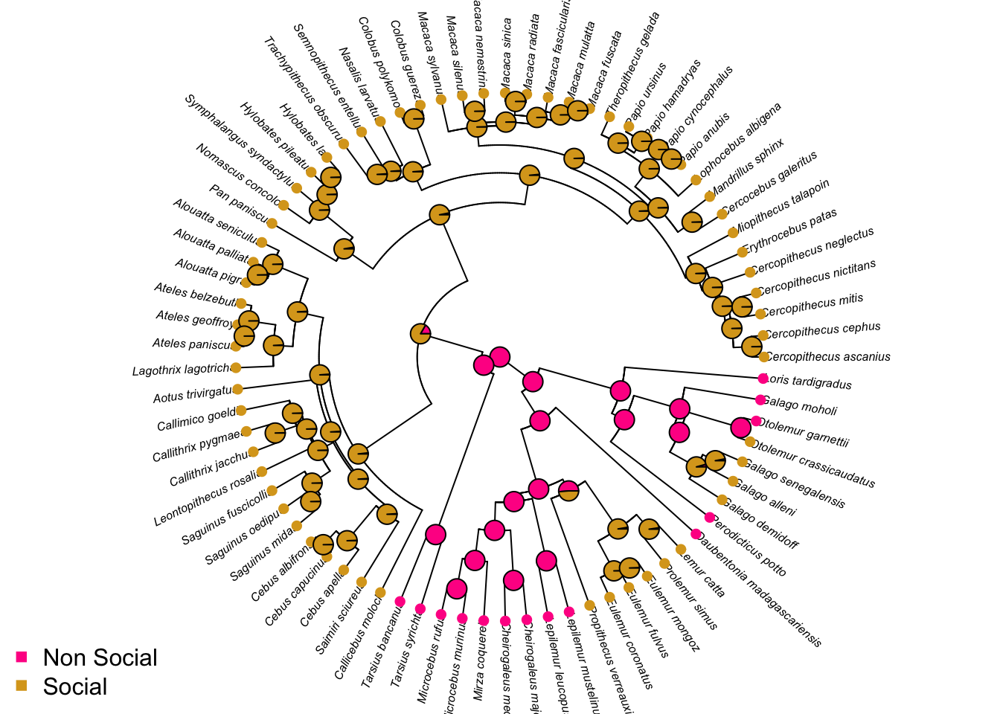
Root is non-social
- Why didn’t I ask you to fit the symmetric model?
Because with only two states the symmetric model is equivalent to the equal rates model
12.10 Beyond simple macroevolutionary models of trait evolution
In the data folder there is another tree (primate-tree.nex) and dataset (primate-data.csv) for investigating the evolution of primate life-history variables. These data come from the PanTHERIA database (Jones et al. 2009) and 10kTrees (Arnold, Matthews, and Nunn 2010).
Read in the tree and data, then prepare them for a PCM analysis (you may have already done this in a previous exercise which should save you some time).
Using log body size (AdultBodyMass_g) as your continuous trait, and social status (SocialStatus) to define the selective regimes, fit (A) a multi-rate Brownian motion model and (B) an OU model with trait optima or long-term mean values for different evolutionary regimes but the same \(\sigma^2\) and \(\alpha\). Note that social status has two states: non-social (1) or social (2). Assume it is evolving according to an all rates different model.
# Load the packages
library(ape)
library(geiger)
library(treeplyr)
library(caper)
library(tidyverse)
library(OUwie)
### Prepare the tree and the data as shown in the Preparation answer above ###
### This should mean you now have mydata and mytree ready to work with ###
# Create Social containing just social status values
Social <- pull(mydata, SocialStatus)
# Give social status names = species names at the tips of the phylogeny
names(Social) <- mydata$tiplabel
# Simulate node and tip values for 500 trees using the ARD model
trees.ARD <- make.simmap(mytree, Social, model = "ARD", nsim = 500)## make.simmap is sampling character histories conditioned on
## the transition matrix
##
## Q =
## 1 2
## 1 -0.009264911 0.009264911
## 2 0.000000000 0.000000000
## (estimated using likelihood);
## and (mean) root node prior probabilities
## pi =
## 1 2
## 0.5 0.5# Store the results of the summary of the 500 trees
summary.ARD <- summary(trees.ARD)
# Get the max likelihood state at each node
best <- apply(summary.ARD$ace, 1, which.max)
# Assign to the tree node labels
mytree$node.label <- levels(as.factor(mydata$SocialStatus))[best]
# Make new dataset with just three columns for OUwie
bodymass <- data.frame(species = mydata$tiplabel,
regime = mydata$SocialStatus,
trait = log(mydata$AdultBodyMass_g))
# Fit BMS model
BMS <- OUwie(mytree, bodymass, model = "BMS", root.station = FALSE)## Warning: An algorithm was not specified. Defaulting to computing the
## determinant and inversion of the vcv.## Initializing...
## Finished. Begin thorough search...
## Finished. Summarizing results.## Warning: An algorithm was not specified. Defaulting to computing the
## determinant and inversion of the vcv.## Initializing...
## Finished. Begin thorough search...
## Finished. Summarizing results.Then answer the following questions:
- Which is the best fitting model?
# Extract AICc scores from the models
aic.scores <- setNames(c(BMS$AICc, OUM$AICc),
c("BMS", "OUM"))
# Get aic weights
aicw(aic.scores)## fit delta w
## BMS 161.4177 0.8237096 0.3984675
## OUM 160.5940 0.0000000 0.6015325OUM
- If you were running these analyses for a publication, what additional models would you compare these models to?
BM and single peak OU for sure. Possibly one or more of the more complex models if you had a good biological reason to
- In the multi rate Brownian model, which social status state has the higher rate of log body mass evolution?
##
## Fit
## lnL AIC AICc BIC model ntax
## -77.54448 161.089 161.4177 168.1204 BMS 77
##
## Rates
## 1 2
## alpha NA NA
## sigma.sq 0.04034893 0.02551472
##
## Optima
## 1 2
## estimate 6.9274879 6.9274879
## se 0.6885504 0.6885504
##
## Arrived at a reliable solutionNon-social (1) has the higher rate of body mass evolution 0.04031313
- Look at the parameter estimates of the multi peak OU model. Do you see anything worrying there? It might help to look at a histogram showing the body sizes of species in the non-social and the social categories.
##
## Fit
## lnL AIC AICc BIC model ntax
## -76.01923 160.0385 160.594 169.4137 OUM 77
##
##
## Rates
## 1 2
## alpha 2.061154e-09 2.061154e-09
## sigma.sq 2.715507e-02 2.715507e-02
##
## Optima
## 1 2
## estimate 5.9981498 17720600
## se 0.6997245 8578705
##
##
## Half life (another way of reporting alpha)
## 1 2
## 336290887 336290887
##
## Arrived at a reliable solution# Plot the body sizes for the different groups
ggplot(mydata, aes(x = log(AdultBodyMass_g), fill = as.factor(SocialStatus))) +
geom_histogram(bins = 20, alpha = 0.5) +
scale_fill_manual(values = social_colours) +
facet_wrap(~SocialStatus, ncol = 1) +
theme(legend.position = "none") +
theme_bw()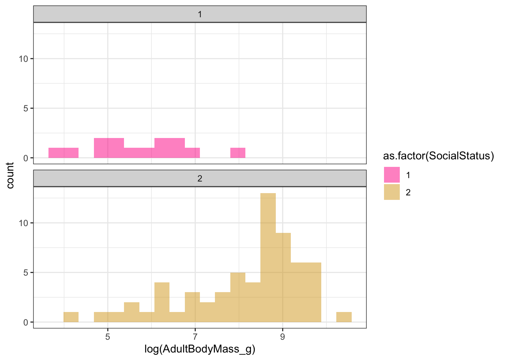
The optima estimates are way off. Non-social species have a long-term mean log body size estimate of 5.918899, which makes sense looking at the histograms of the data. But social species have a long-term mean log body size estimate of 18607801, which if you exponentiate it is infinity. Even King Kong was not infinitely large! Something has clearly gone wrong here, but if we had not looked at the model parameters we would have said this was the best model…It’s likely we just don’t have enough data to fit a model that is as complex as this, so the parameter optimisations are not reliable.
12.11 Diversification
BAMMtools has a several inbuilt example datasets. For this practical exercise we will use the cetacean (whales; from (???)) and the ray-finned fishes (fishes; from (???)) datasets.
Load the whales and fishes trees and BAMM outputs data into R (there is no mcmc.fishes file_).
# Load the packages
library(ape)
library(BAMMtools)
library(coda)
library(phytools)
library(viridis)
# Load whales data from BAMMtools
data(whales)
data(mcmc.whales)
data(events.whales)
# Load fishes data from BAMMtools
data(fishes)
data(mcmc.fishes)## Warning in data(mcmc.fishes): data set 'mcmc.fishes' not founddata(events.fishes)
# Read in the tree, mcmc, and edata for whales
whales_tree <- whales
whales_mcmc <- mcmc.whales
whales_edata <- getEventData(whales, eventdata = events.whales, burnin = 0.1)## Processing event data from data.frame
##
## Discarded as burnin: GENERATIONS < 995000
## Analyzing 1801 samples from posterior
##
## Setting recursive sequence on tree...
##
## Done with recursive sequence# Read in the tree, mcmc, and edata for fishes
fishes_tree <- fishes
fishes_edata <- getEventData(fishes, eventdata = events.fishes, burnin = 0.1)## Processing event data from data.frame
##
## Discarded as burnin: GENERATIONS < 5
## Analyzing 46 samples from posterior
##
## Setting recursive sequence on tree...
##
## Done with recursive sequenceThen answer the following questions:
- How can we tell that the BAMM model for whales has converged? What is the effective sample size for number of shifts?
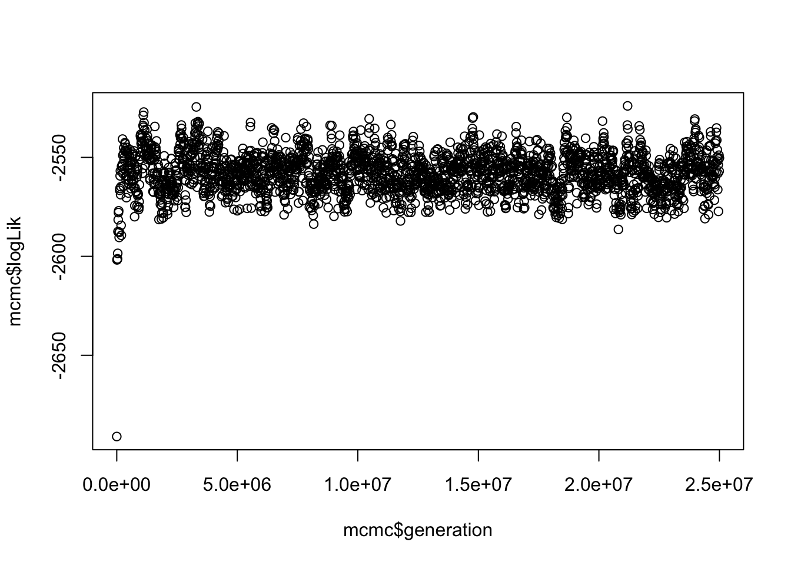
# What is 10% of rows?
burnstart <- floor(0.1 * nrow(mcmc))
# Remove the first 10% from the runs
postburn <- mcmc[burnstart:nrow(mcmc), ]
# Extract ESS for the number of rate shifts parameter
effectiveSize(postburn$N_shifts)## var1
## 273.7424## var1
## 219.238The plot looks like a furry caterpillar (!), and effective sample sizes are well over 200. ESS = 1225.609
- What is the most common number of rate shifts in the posterior for the whales data?
##
## Analyzed 1801 posterior samples
## Shift posterior distribution:
##
## 0 0.0770
## 1 0.6600
## 2 0.2100
## 3 0.0430
## 4 0.0110
## 5 0.0022
##
## Compute credible set of shift configurations for more information:
## See ?credibleShiftSet and ?getBestShiftConfiguration1
- Plot the 95% credible set of rate shift configurations for whales.
# Extract 95% credible set of rate shift configurations
whales_css <- credibleShiftSet(whales_edata, expectedNumberOfShifts = 1,
threshold = 5, set.limit = 0.95)
# Look at the summary
summary(whales_css)##
## 95 % credible set of rate shift configurations sampled with BAMM
##
## Distinct shift configurations in credible set: 4
##
## Frequency of 4 shift configurations with highest posterior probability:
##
##
## rank probability cumulative Core_shifts
## 1 0.46418656 0.4641866 1
## 2 0.28928373 0.7534703 1
## 3 0.14158801 0.8950583 1
## 4 0.09272626 0.9877846 0## Omitted 0 plots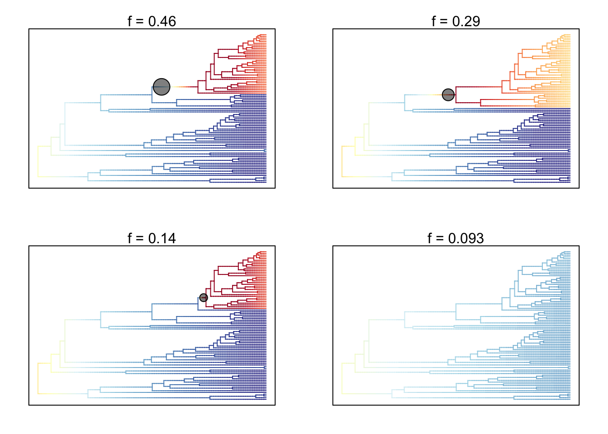
- Plot the mean phylorate plot for fishes.
# Plot mean phylorate plot with legend and slighting larger line width (lwd)
plot.bammdata(fishes_edata, legend = TRUE, lwd = 2)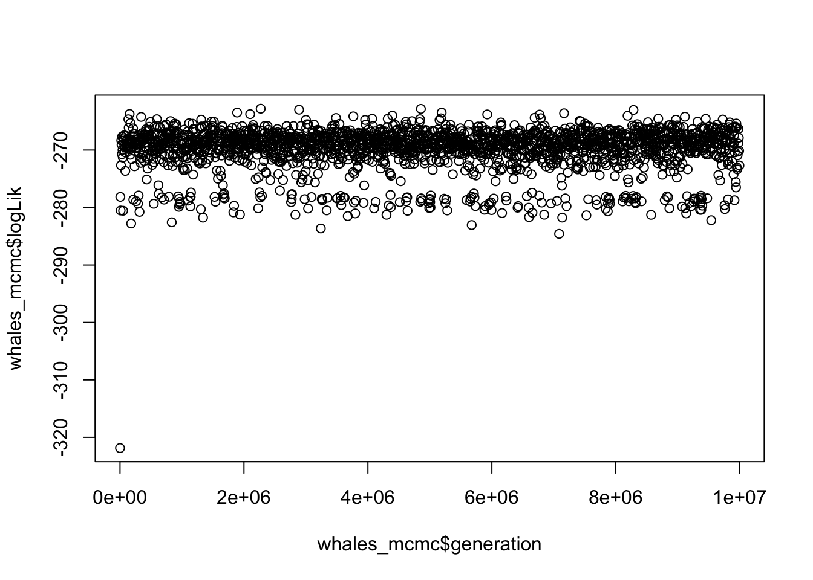
- What are the mean speciation rate and the 90% posterior density for mean speciation rate in fishes?
# Extract speciation and extinction rates from the whole posterior
allrates <- getCladeRates(fishes_edata)
# Calculate overall mean speciation rate
mean(allrates$lambda)## [1] 0.09470252# Calculate 90% highest posterior density for speciation rate
quantile(allrates$lambda, c(0.05, 0.95))## 5% 95%
## 0.09020489 0.09960825Mean = 0.09470252, 5% = 0.09020489, 95% = 0.09960825
References
Arnold, Christian, Luke J Matthews, and Charles L Nunn. 2010. “The 10kTrees Website: A New Online Resource for Primate Phylogeny.” Evolutionary Anthropology: Issues, News, and Reviews 19 (3): 114–18.
Feng, Yan-Jie, David C Blackburn, Dan Liang, David M Hillis, David B Wake, David C Cannatella, and Peng Zhang. 2017. “Phylogenomics Reveals Rapid, Simultaneous Diversification of Three Major Clades of Gondwanan Frogs at the Cretaceous–Paleogene Boundary.” Proceedings of the National Academy of Sciences 114 (29): E5864–E5870.
Jones, Kate E, Jon Bielby, Marcel Cardillo, Susanne A Fritz, Justin O’Dell, C David L Orme, Kamran Safi, et al. 2009. “PanTHERIA: A Species-Level Database of Life History, Ecology, and Geography of Extant and Recently Extinct Mammals: Ecological Archives E090-184.” Ecology 90 (9): 2648–8.
Thomas, Kate N, David J Gower, Rayna C Bell, Matthew K Fujita, Ryan K Schott, and Jeffrey W Streicher. 2020. “Eye Size and Investment in Frogs and Toads Correlate with Adult Habitat, Activity Pattern and Breeding Ecology.” Proceedings of the Royal Society B 287 (1935): 20201393.